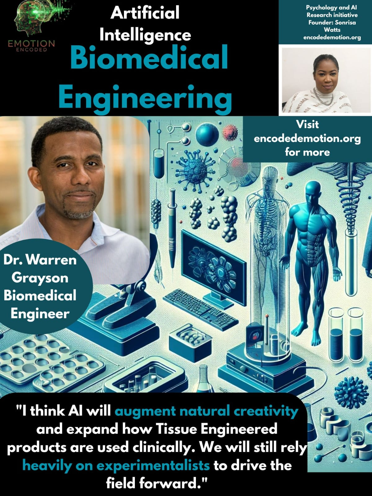

Bridging Biology and Algorithms: Dr. Warren Grayson on AI’s Role in Tissue Engineering
Dr. Warren Grayson, Professor of Biomedical Engineering at Johns Hopkins University, shared his perspective on how artificial intelligence (AI) is poised to shape the future of tissue engineering, a field that combines biology, materials science, and regenerative medicine to restore or replace human tissue.
The Data Hurdle
Dr. Grayson acknowledges that AI’s integration into the field will take time, primarily because the datasets required to train reliable models are still underdeveloped. “AI will definitely impact the field in the future,” he noted. “It will take some time since the datasets needed to train the AI models don’t exist as yet.”
This observation underscores a critical barrier in many scientific domains: while AI offers immense potential, its progress is bounded by the quality and quantity of data available. For tissue engineering, where every biological variable matters, generating and curating accurate datasets is no small task.
A Future of Predictive Healing
Despite these current limitations, Dr. Grayson remains optimistic. He foresees a future where AI could predict healing outcomes and even guide the design of biomaterials. “Ultimately, we expect that we will be able to use it to predict healing and design materials,” he explained. This vision reflects a shift toward predictive and personalized bioengineering, where computational models could help tailor treatments to individual patients.
Augmenting Human Creativity
When asked how AI might influence creativity in his field, Dr. Grayson offered a balanced view: “I think AI will augment natural creativity and expand how tissue-engineered products are used clinically. We will still rely heavily on experimentalists to drive the field forward.”
Here, he highlights a crucial nuance often missed in public discourse. AI will not replace the experimentalist but rather enhance their creative process, helping scientists generate new hypotheses, analyze complex data, and accelerate discovery, while human intuition continues to lead.
Optimism Over Alarm
Finally, when reflecting on potential concerns or risks, Dr. Grayson expressed optimism rather than alarm: “The potential for using AI to predict the outcome of treatments and personalize therapies is very exciting. Currently, AI hasn't been employed extensively in the field, and there’s nothing that worries me.”
His calm confidence captures the current state of medical AI, a space of possibility rather than peril, marked by gradual progress rather than disruption.
At Emotion Encoded, Dr. Grayson’s reflections contribute to our broader research initiative exploring how professionals in high-stakes industries perceive and emotionally respond to artificial intelligence. His responses remind us that the path to integration begins not with fear, but with curiosity, and that even in the most technical domains, the human element remains essential.